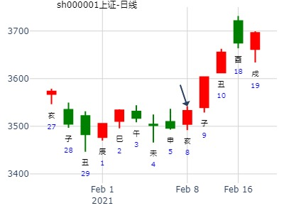
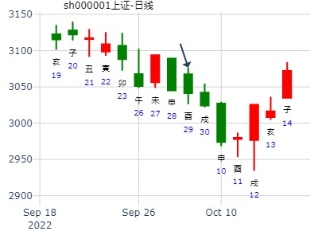

主帖标题: 丑月个股300491涨跌
公历时间：2022年1月5日17时29分
干 支：辛丑年 辛丑月 戊午日 辛酉时
旬 空：辰巳 辰巳 子丑 子丑
艮宫：山火贲 离宫：离为火（六冲）
六神 伏 神 【本 卦】 【变 卦】
朱雀 ▄▄▄▄▄ 官鬼丙寅木 ▄▄▄▄▄ 父母己巳火 世
青龙 ▄▄ ▄▄ 妻财丙子水 ▄▄ ▄▄ 兄弟己未土
玄武 ▄▄ ▄▄ 兄弟丙戌土 应× ▄▄▄▄▄ 子孙己酉金
白虎 子孙丙申金 ▄▄▄▄▄ 妻财己亥水 ▄▄▄▄▄ 妻财己亥水 应
螣蛇 父母丙午火 ▄▄ ▄▄ 兄弟己丑土 ▄▄ ▄▄ 兄弟己丑土
勾陈 ▄▄▄▄▄ 官鬼己卯木 世 ▄▄▄▄▄ 官鬼己卯木
丑月个股300491涨跌
公历时间：2022年1月5日17时29分
干 支：辛丑年 辛丑月 戊午日 辛酉时
旬 空：辰巳 辰巳 子丑 子丑
艮宫：山火贲 离宫：离为火（六冲）
六神 伏 神 【本 卦】 【变 卦】
朱雀 ▄▄▄▄▄ 官鬼丙寅木 ▄▄▄▄▄ 父母己巳火 世
青龙 ▄▄ ▄▄ 妻财丙子水 ▄▄ ▄▄ 兄弟己未土
玄武 ▄▄ ▄▄ 兄弟丙戌土 应× ▄▄▄▄▄ 子孙己酉金
白虎 子孙丙申金 ▄▄▄▄▄ 妻财己亥水 ▄▄▄▄▄ 妻财己亥水 应
螣蛇 父母丙午火 ▄▄ ▄▄ 兄弟己丑土 ▄▄ ▄▄ 兄弟己丑土
勾陈 ▄▄▄▄▄ 官鬼己卯木 世 ▄▄▄▄▄ 官鬼己卯木
占事：长城汽车到春节前走势--天同
时间: 2022-01-10 5：08分
干支: 辛丑年辛丑月癸亥日 (旬空: 子丑 )
山火贲 离为火
六神 伏神 本 卦 变 卦
白虎 ▅▅▅▅▅ 官鬼寅木 ▅▅▅▅▅ 父母巳火 世
腾蛇 ▅▅ ▅▅ 妻财子水 ▅▅ ▅▅ 兄弟未土
勾陈 ▅▅ ▅▅ 兄弟戌土 应Ｘ→ ▅▅▅▅▅ 子孙酉金
朱雀 子孙申金▅▅▅▅▅ 妻财亥水 ▅▅▅▅▅ 妻财亥水 应
青龙 父母午火▅▅ ▅▅ 兄弟丑土 ▅▅ ▅▅ 兄弟丑土
玄武 ▅▅▅▅▅ 官鬼卯木 世 ▅▅▅▅▅ 官鬼卯木
占事：长城汽车到明年夏至之前走势--天同
时间: 2021-12-22 5：47分
干支: 辛丑年庚子月甲辰日 (旬空: 寅卯 )
火天大有(归魂) 山风蛊(归魂)
六神 伏神 本 卦 变 卦
玄武 ▅▅▅▅▅ 官鬼巳火 应 ▅▅▅▅▅ 妻财寅木 应
白虎 ▅▅ ▅▅ 父母未土 ▅▅ ▅▅ 子孙子水
腾蛇 ▅▅▅▅▅ 兄弟酉金 Ｏ→ ▅▅ ▅▅ 父母戌土
勾陈 ▅▅▅▅▅ 父母辰土 世 ▅▅▅▅▅ 兄弟酉金 世
朱雀 ▅▅▅▅▅ 妻财寅木 ▅▅▅▅▅ 子孙亥水
青龙 ▅▅▅▅▅ 子孙子水 Ｏ→ ▅▅ ▅▅ 父母丑土
长城汽车 A未来12个月走势---天同
时间: 2021-12-07 20：0分
干支: 辛丑年庚子月己丑日甲戌时 (旬空: 午未 )
火风鼎 天风姤
六神 伏神 本 卦 变 卦
勾陈 ▅▅▅▅▅ 兄弟巳火 ▅▅▅▅▅ 子孙戌土
朱雀 ▅▅ ▅▅ 子孙未土 应Ｘ→ ▅▅▅▅▅ 妻财申金
青龙 ▅▅▅▅▅ 妻财酉金 ▅▅▅▅▅ 兄弟午火 应
玄武 ▅▅▅▅▅ 妻财酉金 ▅▅▅▅▅ 妻财酉金
白虎 ▅▅▅▅▅ 官鬼亥水 世 ▅▅▅▅▅ 官鬼亥水
腾蛇 父母卯木▅▅ ▅▅ 子孙丑土 ▅▅ ▅▅ 子孙丑土 世
主帖标题: 2月3-7日本周涨跌227
227年卦 色子
公历时间：2020年2月8日12时5分 农历时间：庚子年 正月十五日午时
干 支：庚子年 戊寅月 辛巳日 甲午时
旬 空：辰巳 申酉 申酉 辰巳
艮宫：山火贲 离宫：离为火（六冲）
螣蛇 ▄▄▄▄▄ 官鬼丙寅木 ▄▄▄▄▄ 父母己巳火 世
勾陈 ▄▄ ▄▄ 妻财丙子水 ▄▄ ▄▄ 兄弟己未土
朱雀 ▄▄ ▄▄ 兄弟丙戌土 应× ▄▄▄▄▄ 子孙己酉金
青龙 子孙丙申金 ▄▄▄▄▄ 妻财己亥水 ▄▄▄▄▄ 妻财己亥水 应
玄武 父母丙午火 ▄▄ ▄▄ 兄弟己丑土 ▄▄ ▄▄ 兄弟己丑土
白虎 ▄▄▄▄▄ 官鬼己卯木 世 ▄▄▄▄▄ 官鬼己卯木
主帖标题: 大家一起来，九缠烂打：上证2021.2.8收盘个位数是几？在1-3的范围吗
起卦公历：2021年2月6日16时36分(北京时间)
起卦农历：二○二○年 十二月 廿五日 申时。
干支： 辛丑年 庚寅月 乙酉日 甲申时 (卦身：子)
主变卦 山火贲(艮宫) 之 离为火(离宫) [空亡:午、未]
玄武 ━━━ 官鬼寅木 ━━━ 父母巳火 世
白虎 ━ ━ 妻财子水 ━ ━ 兄弟未土
螣蛇 ━ ━×兄弟戌土 应 ━━━ 子孙酉金
勾陈 ━━━ 妻财亥水 ━━━ 妻财亥水 应
朱雀 ━ ━ 兄弟丑土 ━ ━ 兄弟丑土
青龙 ━━━ 官鬼卯木 世 ━━━ 官鬼卯木

麦格米特上半年行情-天同
时间: 2025-02-07 15时25分
干支: 乙巳年戊寅月丁未日 (旬空: 寅卯 )
山火贲 离为火
六神 伏神 本 卦 变 卦
青龙 ▅▅▅▅▅ 官鬼寅木 ▅▅▅▅▅ 父母巳火 世
玄武 ▅▅ ▅▅ 妻财子水 ▅▅ ▅▅ 兄弟未土
白虎 ▅▅ ▅▅ 兄弟戌土 应Ｘ→ ▅▅▅▅▅ 子孙酉金
腾蛇 子孙申金▅▅▅▅▅ 妻财亥水 ▅▅▅▅▅ 妻财亥水 应
勾陈 父母午火▅▅ ▅▅ 兄弟丑土 ▅▅ ▅▅ 兄弟丑土
朱雀 ▅▅▅▅▅ 官鬼卯木 世 ▅▅▅▅▅ 官鬼卯木
麦格米特短线走势-天同
时间: 2025-02-10 13时44分
干支: 乙巳年戊寅月庚戌日 (旬空: 寅卯 )
山火贲 离为火
六神 伏神 本 卦 变 卦
腾蛇 ▅▅▅▅▅ 官鬼寅木 ▅▅▅▅▅ 父母巳火 世
勾陈 ▅▅ ▅▅ 妻财子水 ▅▅ ▅▅ 兄弟未土
朱雀 ▅▅ ▅▅ 兄弟戌土 应Ｘ→ ▅▅▅▅▅ 子孙酉金
青龙 子孙申金▅▅▅▅▅ 妻财亥水 ▅▅▅▅▅ 妻财亥水 应
玄武 父母午火▅▅ ▅▅ 兄弟丑土 ▅▅ ▅▅ 兄弟丑土
白虎 ▅▅▅▅▅ 官鬼卯木 世 ▅▅▅▅▅ 官鬼卯木
下周上证指数-硬币卦 天同群友
时间: 2025-02-22 10时00分
干支: 乙巳年戊寅月壬戌日 (旬空: 子丑 )
山火贲 离为火
六神 伏神 本 卦 变 卦
白虎 ▅▅▅▅▅ 官鬼寅木 ▅▅▅▅▅ 父母巳火 世
腾蛇 ▅▅ ▅▅ 妻财子水 ▅▅ ▅▅ 兄弟未土
勾陈 ▅▅ ▅▅ 兄弟戌土 应Ｘ→ ▅▅▅▅▅ 子孙酉金
朱雀 子孙申金▅▅▅▅▅ 妻财亥水 ▅▅▅▅▅ 妻财亥水 应
青龙 父母午火▅▅ ▅▅ 兄弟丑土 ▅▅ ▅▅ 兄弟丑土
玄武 ▅▅▅▅▅ 官鬼卯木 世 ▅▅▅▅▅ 官鬼卯木
占事：2008.03.18－21日0727走势？
起法：手动摇卦 国际易经网 http://www.iqing.net
公历：2008年3月17日16时32分 星期一 开元财经 六爻排盘系统期货版
干支：戊子年 乙卯月 丙辰日 丙申时 (旬空：子丑)
艮宫：山火贲 离宫：离为火（六冲）
六神 伏 神 【本 卦】 【变 卦】
青龙 ▅▅▅▅▅ 官鬼丙寅木 ▅▅▅▅▅ 父母己巳火 世
玄武 ▅▅ ▅▅ 妻财丙子水 ▅▅ ▅▅ 兄弟己未土
白虎 ▅▅ ▅▅ 兄弟丙戌土 应×→ ▅▅▅▅▅ 子孙己酉金
螣蛇 子孙丙申金 ▅▅▅▅▅ 妻财己亥水 ▅▅▅▅▅ 妻财己亥水 应
勾陈 父母丙午火 ▅▅ ▅▅ 兄弟己丑土 ▅▅ ▅▅ 兄弟己丑土
朱雀 ▅▅▅▅▅ 官鬼己卯木 世 ▅▅▅▅▅ 官鬼己卯木
主帖标题: 上证3.22二收盘走势？
求测人：某人，男，庚午(1990年)，自动起卦(起卦方式)
占问事宜：要问的事情
公历：2022年3月21日15时33分，星期一。
干支：壬寅年 癸卯月 癸酉日 庚申时 (卦身：午)
主变卦 山火贲(艮宫) 之 离为火(离宫) [空亡:戌、亥]
白虎 ▅▅▅▅▅ 官鬼丙寅木 ▅▅▅▅▅ 父母己巳火 世
螣蛇 ▅▅ ▅▅ 妻财丙子水 ▅▅ ▅▅ 兄弟己未土
勾陈 ▅▅ ▅▅×兄弟丙戌土 应 ▅▅▅▅▅ 子孙己酉金
朱雀 子孙丙申金 ▅▅▅▅▅ 妻财己亥水 ▅▅▅▅▅ 妻财己亥水 应
青龙 父母丙午火 ▅▅ ▅▅ 兄弟己丑土 ▅▅ ▅▅ 兄弟己丑土
玄武 ▅▅▅▅▅ 官鬼己卯木 世 ▅▅▅▅▅ 官鬼己卯木
主帖标题: 6.10上证
公历起卦时间：2020年6月9日7时41分 (手工指定)
干支：庚子年 壬午月 癸未日 丙辰时 （日空：申酉）
艮宫：山火贲 (六合) 离宫：离为火 (六冲)
六神 伏神 本 卦 变 卦
白虎 官鬼丙寅木 ▅▅▅▅▅ 父母己巳火 ▅▅▅▅▅ 世
螣蛇 妻财丙子水 ▅▅ ▅▅ 兄弟己未土 ▅▅ ▅▅
勾陈 兄弟丙戌土 ▅▅ ▅▅ 应 ╳→ 子孙己酉金 ▅▅▅▅▅
朱雀 子孙丙申金 妻财己亥水 ▅▅▅▅▅ 妻财己亥水 ▅▅▅▅▅ 应
青龙 父母丙午火 兄弟己丑土 ▅▅ ▅▅ 兄弟己丑土 ▅▅ ▅▅
玄武 官鬼己卯木 ▅▅▅▅▅ 世 官鬼己卯木 ▅▅▅▅▅
主帖标题: 7月15-19日上海大盘升跌 周1-4预测正确
7月15-19日上海大盘升跌
癸巳 己未己卯 己巳 (日空:申酉 时空:戌亥 (2013/07/1210:35:35)
山火贲 离为火
勾陈 官鬼寅木／ 父母巳火 ／ 世
朱雀 妻财子水∥ 兄弟未土 ∥
青龙 兄弟戌土× 应 子孙酉金 ／
子孙申金：玄武 妻财亥水／ 妻财亥水 ／ 应
父母午火：白虎 兄弟丑土∥ 兄弟丑土 ∥
腾蛇 官鬼卯木／ 世 官鬼卯木 ／
2013-7-13 23:06断周一、二总体涨，周三四跌，幅度不小，周五升
周一+19.90，+0.98%，周二6.33+0.31%，周三-20.08 -1.01%；周四-25.53，-1.05%，基本正确了。期待明天升

主帖标题: 占几个新股，上市三四天就开板了，请大家帮忙看看
婚否：已 出生年:1981 性别：女
占事：占603116此股下周走势
起卦方式：手动摇卦 公历时间：2015年7月4日18时41分
干 支：乙未年 壬午月 辛巳日 丁酉时 旬 空：辰巳 申酉 申酉 辰巳
神 煞：驿马─亥 桃花─午 日禄─酉 贵人─寅，午
离宫：山火贲 离宫：离为火（六冲）
螣蛇 ▄▄▄▄▄ 官鬼丙寅木 ▄▄▄▄▄ 父母己巳火 世
勾陈 ▄▄ ▄▄ 妻财丙子水 ▄▄ ▄▄ 兄弟己未土
朱雀 ▄▄ ▄▄ 兄弟丙戌土 应× ▄▄▄▄▄ 子孙己酉金
青龙 子孙丙申金 ▄▄▄▄▄ 妻财己亥水 ▄▄▄▄▄ 妻财己亥水 应
玄武 父母丙午火 ▄▄ ▄▄ 兄弟己丑土 ▄▄ ▄▄ 兄弟己丑土
白虎 ▄▄▄▄▄ 官鬼己卯木 世 ▄▄▄▄▄ 官鬼己卯木
周五看到此几股流入量大，还是新股特占此股的卦看看：603116红蜻蜓，603589口子窖，603979金诚信，601211国泰君安
主帖标题: 7月9日上指
公历起卦时间：2015年7月8日19时58分 (电脑自动)
干支：乙未年 癸未月 乙酉日 丙戌时 （日空：午未）
神煞：驿马－亥 桃花－午 日禄－卯 贵人－子，申
艮宫：山火贲 (六合) 离宫：离为火 (六冲)
六神 伏神 本 卦 变 卦
玄武 官鬼丙寅木 ▅▅▅▅▅ 父母己巳火 ▅▅▅▅▅ 世
白虎 妻财丙子水 ▅▅ ▅▅ 兄弟己未土 ▅▅ ▅▅
腾蛇 兄弟丙戌土 ▅▅ ▅▅ 应 ╳→ 子孙己酉金 ▅▅▅▅▅
勾陈 子孙丙申金 妻财己亥水 ▅▅▅▅▅ 妻财己亥水 ▅▅▅▅▅ 应
朱雀 父母丙午火 兄弟己丑土 ▅▅ ▅▅ 兄弟己丑土 ▅▅ ▅▅
青龙 官鬼己卯木 ▅▅▅▅▅ 世 官鬼己卯木 ▅▅▅▅▅
财受生，涨。
求测人：某人，男，庚申(1980年)，自动起卦(起卦方式)
占问事宜：2016年8月第一周涨幅前三名的股票名称是什么？不包括新股!
公历：2016年7月29日16时16分，星期五。
干支：丙申年 乙未月 壬子日 戊申时 (卦身：午)
主变卦 山火贲(艮宫) 之 离为火(离宫) [空亡:寅、卯]
白虎 ▅▅▅▅▅ 官鬼丙寅木 ▅▅▅▅▅ 父母己巳火 世
螣蛇 ▅▅ ▅▅ 妻财丙子水 ▅▅ ▅▅ 兄弟己未土
勾陈 ▅▅ ▅▅×兄弟丙戌土 应 ▅▅▅▅▅ 子孙己酉金
朱雀 子孙丙申金 ▅▅▅▅▅ 妻财己亥水 ▅▅▅▅▅ 妻财己亥水 应
青龙 父母丙午火 ▅▅ ▅▅ 兄弟己丑土 ▅▅ ▅▅ 兄弟己丑土
玄武 ▅▅▅▅▅ 官鬼己卯木 世 ▅▅▅▅▅ 官鬼己卯木
主帖标题: ：002728台城制药下午跟明天涨跌
生：没填 年 性别：男 占事：002728台城制药近期涨跌
排卦：元亨利贞网六爻在线排盘系统 http://www.china95.net
公历起卦时间：2014年8月13日17时39分 (电脑自动)
干支：甲午年 壬申月 丙辰日 丁酉时 （日空：子丑）
艮宫：山火贲 (六合) 离宫：离为火 (六冲)
青龙 官鬼丙寅木 ▅▅▅▅▅ 父母己巳火 ▅▅▅▅▅ 世
玄武 妻财丙子水 ▅▅ ▅▅ 兄弟己未土 ▅▅ ▅▅
白虎 兄弟丙戌土 ▅▅ ▅▅ 应 ╳→ 子孙己酉金 ▅▅▅▅▅
腾蛇 子孙丙申金 妻财己亥水 ▅▅▅▅▅ 妻财己亥水 ▅▅▅▅▅ 应
勾陈 父母丙午火 兄弟己丑土 ▅▅ ▅▅ 兄弟己丑土 ▅▅ ▅▅
朱雀 官鬼己卯木 ▅▅▅▅▅ 世 官鬼己卯木 ▅▅▅▅▅
占8月7日上证。贲之离。.md
时间: 2015-08-06
干支: 乙未年癸未月甲寅日 (旬空: 子丑 )
山火贲 离为火
六神 伏神 本 卦 变 卦
玄武 ▅▅▅▅▅ 官鬼寅木 ▅▅▅▅▅ 父母巳火 世
白虎 ▅▅ ▅▅ 妻财子水 ▅▅ ▅▅ 兄弟未土
腾蛇 ▅▅ ▅▅ 兄弟戌土 应Ｘ→ ▅▅▅▅▅ 子孙酉金
勾陈 子孙申金▅▅▅▅▅ 妻财亥水 ▅▅▅▅▅ 妻财亥水 应
朱雀 父母午火▅▅ ▅▅ 兄弟丑土 ▅▅ ▅▅ 兄弟丑土
青龙 ▅▅▅▅▅ 官鬼卯木 世 ▅▅▅▅▅ 官鬼卯木
600089特变电工821到国庆走势。贲之离。
时间: 2022-08-21 13时00分
干支: 壬寅年戊申月丙午日 (旬空: 寅卯 )
山火贲 离为火
六神 伏神 本 卦 变 卦
青龙 ▅▅▅▅▅ 官鬼寅木 ▅▅▅▅▅ 父母巳火 世
玄武 ▅▅ ▅▅ 妻财子水 ▅▅ ▅▅ 兄弟未土
白虎 ▅▅ ▅▅ 兄弟戌土 应Ｘ→ ▅▅▅▅▅ 子孙酉金
腾蛇 子孙申金▅▅▅▅▅ 妻财亥水 ▅▅▅▅▅ 妻财亥水 应
勾陈 父母午火▅▅ ▅▅ 兄弟丑土 ▅▅ ▅▅ 兄弟丑土
朱雀 ▅▅▅▅▅ 官鬼卯木 世 ▅▅▅▅▅ 官鬼卯木
巨星科技到9月底-金铜钱卦
时间: 2024-08-28
干支: 甲辰年壬申月甲子日 (旬空: 戌亥 )
山火贲 离为火
六神 伏神 本 卦 变 卦
玄武 ▅▅▅▅▅ 官鬼寅木 ▅▅▅▅▅ 父母巳火 世
白虎 ▅▅ ▅▅ 妻财子水 ▅▅ ▅▅ 兄弟未土
腾蛇 ▅▅ ▅▅ 兄弟戌土 应Ｘ→ ▅▅▅▅▅ 子孙酉金
勾陈 子孙申金▅▅▅▅▅ 妻财亥水 ▅▅▅▅▅ 妻财亥水 应
朱雀 父母午火▅▅ ▅▅ 兄弟丑土 ▅▅ ▅▅ 兄弟丑土
青龙 ▅▅▅▅▅ 官鬼卯木 世 ▅▅▅▅▅ 官鬼卯木
121021风生水起 ?占事：上证指数下周
公历时间：2015年9月5日6时54分?
干 支：乙未年?甲申月?甲申日?丁卯时
旬 空：辰巳???午未???午未???戌亥??
艮宫：山火贲 离宫：离为火（六冲）?
玄武 ▄▄▄▄▄ 官鬼丙寅木 ▄▄▄▄▄ 父母己巳火 世
白虎 ▄▄ ▄▄ 妻财丙子水 ▄▄ ▄▄ 兄弟己未土
螣蛇 ▄▄ ▄▄ 兄弟丙戌土 应× ▄▄▄▄▄ 子孙己酉金
勾陈 子孙丙申金 ▄▄▄▄▄ 妻财己亥水 ▄▄▄▄▄ 妻财己亥水 应
朱雀 父母丙午火 ▄▄ ▄▄ 兄弟己丑土 ▄▄ ▄▄ 兄弟己丑土
青龙 ▄▄▄▄▄ 官鬼己卯木 世 ▄▄▄▄▄ 官鬼己卯木
六四：贲如皤如，白马翰如，匪寇婚媾。象曰：六四，当位疑也。匪寇婚媾，终
无尤 也

贲之离，通源石油300164月卦。.md
时间: 2021-09-28 12时40分
干支: 辛丑年丁酉月己卯日 (旬空: 申酉 )
山火贲 离为火
六神 伏神 本 卦 变 卦
勾陈 ▅▅▅▅▅ 官鬼寅木 ▅▅▅▅▅ 父母巳火 世
朱雀 ▅▅ ▅▅ 妻财子水 ▅▅ ▅▅ 兄弟未土
青龙 ▅▅ ▅▅ 兄弟戌土 应Ｘ→ ▅▅▅▅▅ 子孙酉金
玄武 子孙申金▅▅▅▅▅ 妻财亥水 ▅▅▅▅▅ 妻财亥水 应
白虎 父母午火▅▅ ▅▅ 兄弟丑土 ▅▅ ▅▅ 兄弟丑土
腾蛇 ▅▅▅▅▅ 官鬼卯木 世 ▅▅▅▅▅ 官鬼卯木
主帖标题: 9.30——仍无起色
起卦公历：2022年9月29日11时56分(北京时间)
起卦农历：二○二二年 九月 初四日 午时。
干支： 壬寅年 己酉月 乙酉日 壬午时 (卦身：卯)戌
主变卦 山火贲(艮宫) 之 离为火(离宫) [空亡:午、未]
玄武 ━━━ 官鬼丙寅木 ━━━ 父母己巳火 世
白虎 ━ ━ 妻财丙子水 ━ ━ 兄弟己未土
螣蛇 ━ ━×兄弟丙戌土 应 ━━━ 子孙己酉金
勾陈 孙申金 ━━━ 妻财己亥水 ━━━ 妻财己亥水 应
朱雀 父午火 ━ ━ 兄弟己丑土 ━ ━ 兄弟己丑土
青龙 ━━━ 官鬼己卯木 世 ━━━ 官鬼己卯木
◇六四:贲如皤如，白马翰如，匪寇婚媾。 象曰：六四，当位疑也。 匪寇婚媾，终无尤也。
虽有震荡，终是跌势。

出生：没填 年 性别：男 占事：603003龙宇燃油明天涨跌
排卦：元亨利贞网六爻在线排盘系统 http://www.china95.net
公历起卦时间：2014年11月18日18时38分 (电脑自动)
干支：甲午年 乙亥月 癸巳日 辛酉时 （日空：午未）
神煞：驿马－亥 桃花－午 日禄－子 贵人－卯，巳
艮宫：山火贲 (六合) 离宫：离为火 (六冲)
六神 伏神 本 卦 变 卦
白虎 官鬼丙寅木 ▅▅▅▅▅ 父母己巳火 ▅▅▅▅▅ 世
腾蛇 妻财丙子水 ▅▅ ▅▅ 兄弟己未土 ▅▅ ▅▅
勾陈 兄弟丙戌土 ▅▅ ▅▅ 应 ╳→ 子孙己酉金 ▅▅▅▅▅
朱雀 子孙丙申金 妻财己亥水 ▅▅▅▅▅ 妻财己亥水 ▅▅▅▅▅ 应
青龙 父母丙午火 兄弟己丑土 ▅▅ ▅▅ 兄弟己丑土 ▅▅ ▅▅
玄武 官鬼己卯木 ▅▅▅▅▅ 世 官鬼己卯木 ▅▅▅▅▅
海通证券下周走势。贲之离。兄化子戌化酉。戌日涨停直接化子.md
时间: 2014-11-29
干支: 甲午年乙亥月甲辰日 (旬空: 寅卯 )
山火贲 离为火
六神 伏神 本 卦 变 卦
玄武 ▅▅▅▅▅ 官鬼寅木 ▅▅▅▅▅ 父母巳火 世
白虎 ▅▅ ▅▅ 妻财子水 ▅▅ ▅▅ 兄弟未土
腾蛇 ▅▅ ▅▅ 兄弟戌土 应Ｘ→ ▅▅▅▅▅ 子孙酉金
勾陈 子孙申金▅▅▅▅▅ 妻财亥水 ▅▅▅▅▅ 妻财亥水 应
朱雀 父母午火▅▅ ▅▅ 兄弟丑土 ▅▅ ▅▅ 兄弟丑土
青龙 ▅▅▅▅▅ 官鬼卯木 世 ▅▅▅▅▅ 官鬼卯木
六四：贲如皤如，白马翰如，匪寇婚媾。象曰：六四，当位疑也。匪寇婚媾，终无尤也。
300425到下周末-风生水起
时间: 2024-12-18 10时18分
干支: 甲辰年丙子月丙辰日 (旬空: 子丑 )
山火贲 离为火
六神 伏神 本 卦 变 卦
青龙 ▅▅▅▅▅ 官鬼寅木 ▅▅▅▅▅ 父母巳火 世
玄武 ▅▅ ▅▅ 妻财子水 ▅▅ ▅▅ 兄弟未土
白虎 ▅▅ ▅▅ 兄弟戌土 应Ｘ→ ▅▅▅▅▅ 子孙酉金
腾蛇 子孙申金▅▅▅▅▅ 妻财亥水 ▅▅▅▅▅ 妻财亥水 应
勾陈 父母午火▅▅ ▅▅ 兄弟丑土 ▅▅ ▅▅ 兄弟丑土
朱雀 ▅▅▅▅▅ 官鬼卯木 世 ▅▅▅▅▅ 官鬼卯木
结果当天涨停20%
六四：贲如皤如，白马翰如，匪寇婚媾。